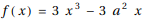
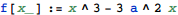
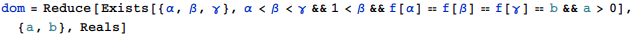
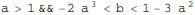
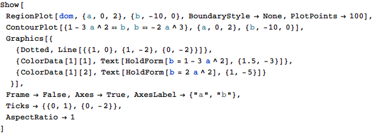
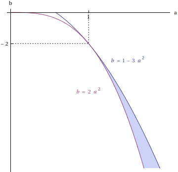

東京大学 2018年 理科 第4問
問題
a>0とし、とおく。
次の2条件を満たす点(a,b)の動きうる範囲を求め、座標平面上に図示せよ。
条件1: 方程式f(x)=bは相異なる3実数解を持つ。
条件2: さらに、方程式f(x)=bの解をα<β<γとすると、β>1である。
解答
条件1と条件2から(a,b)の満たす条件を求める。



この領域を図示すると下図塗りつぶし部(境界線は含まない)。


補足・感想
ストレートにMathematicaに入力できた。